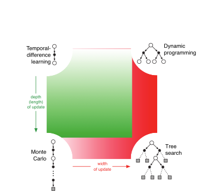

8. Model Free Reinforced Learning¶
Monte Carlo (MC) Learning¶
- Set the state as initial state and run-to-end in the environment for multiple times
- Calculate the average reward of them: value = mean return
- Note: can only apply to episodic MDPs （有终止状态的Markov Decision Process)
MC Prediction¶
Classical Policy Evaluation¶
-
Compute value-function by using empirical mean instead of expectation $$ V(s) = \frac{1}{N(s)} \sum_{i=1}^{N(s)} G_t^{(i)} $$
- \(N(s)\) - how many times \(G_t\) is visited
- when \(N(s) \to \infty\), \(V(s) \to v_\pi(s)\).
First-Visit vs. Every-Visit¶
- In each episode, when the state will be counted and updated
| Aspect | First-Visit MC | Every-Visit MC |
|---|---|---|
| When? | Only the first time appeard | Every time appeard |
| Pros | Avoids dependence between multiple visits | Faster convergence in practice |
| Cons | Some visits ignored | Higher variance |
| Suitable Scenario | Long episodes with repeated states | Short episodes or rare-state situations |
\(\alpha\)-style prediction¶
-
In practice, we often use learning rate \(\alpha\) to replace strict mean: $$ V(s) \gets V(s) + \alpha(G_t - V(s)) $$
- online learning supported
- better performance in non-stationary environment
MC Control¶
Temporal Difference (TD) Learning¶
- Key Mechanisms: bootstrap + sample
- Sampling: an "1-step experience" (TD(0))
- \(e = \{S_t \to A_t \to R_{t+1}, S_{t+1}\}\)
- Bootstrapping: use estimation of future values to update the current value
- Sampling: an "1-step experience" (TD(0))
TD Prediction¶
TD(0)¶
-
Look 1-step $$ V(S_t) \gets V(s_t) + \alpha(R_{t+1} + \gamma V(s_{t+1})-V(s_t)) $$
-
\(R_{t+1}\) - real reward
- \(\delta = R_{t+1} + \gamma V(s_{t+1})-V(s_t)\) - TD Error
TD(n)¶
- Look more steps into the future $$ G^{(n)}t = R{t+1} + \gamma R_{t+2} + \cdots + \gamma^{n-1} R_{t+n} + {{\gamma^n V(S_{t+n})}} $$
-
Update in direction of error ([#\(\alpha\)-style prediction]) $$ V(S_t) \;\leftarrow\; V(S_t) + \alpha \big({{G_t^{(n)} - V(S_t)}} \big) $$
-
Root Mean Square (RMS) Errors 均方差根 ← 𝛼; online/offline updates (𝛼 → 0 or 𝛼 → 1)
- RMS Errors → different optimal choices of n
- Small n → More rely on prediction, faster but higher bias
- Large n → More rely on exploitation, more precise but higher variance
TD(𝝀)¶
-
Average n-Steps Returns
-
G(t; 𝜆) = (1 - 𝜆) · 𝛴 𝜆ⁿ⁻¹ G(t; n)
-
Using weight (1 - 𝜆) · 𝜆ⁿ⁻¹ to balance short-term and long-term rewards
Eligibility Traces¶
- Simplify calculation of G(t; 𝝀**)
-
Define a trace E(t; s) of every state = How many time visited and how far from current state
- E(t; s) = 𝛾𝜆E(t-1; s) + 1 if S(t) = s else 0
-
If we visit the state, it’s trace goes up suddenly (by 1), if we don’t visit it, it falls down continuously
- V(s) ← V(s) + 𝛼 · 𝛿 · E(t; s)
Forward vs. Backward View¶
- Original way calculating G(t; 𝜆) is a Forward View of 𝜆-Reward, we have to wait episodes terminate so that we can calculate all G(t; n) (offline)
- Eligibility Traces is a Backward View of 𝜆-Reward, we update prediction of state step by step(online)
- Backward Propagation - Use Eligibility Traces to propagate TD error
- state visited more times = more responsible on current TD error
- Forward View = Backward View (in Batch/offline update)
MC vs. TD¶
| Aspect | Monte-Carlo (MC) | Temporal-Difference (TD) |
|---|---|---|
| Learning timing | Offline - Must wait until the episode ends | Online - Learn after each step |
| Assumption Needed | episodic (terminating) environment only | both episodic and continuing |
| Target used | \(G_t\) | \(R_{t+1} + \gamma V(S_{t+1}\)) |
| Exploits Markov property? | ❌ | ✅ |
| Bias | Unbiased (return is true target) | Biased (bootstraps using V(s′)) |
| Variance | High (Every-visit) | Low |
| B-V Trade-off | Bias = 0, Variance ↑ | Bias ↑, Variance ↓ |
| Efficiency in Markov env | ⚠️Less efficient | ✅More efficient |
| Efficiency in non-Markov or PMDP env | ✅More efficient with backup learning | ⚠️Less efficient |
| Optimisation in limited experience (Batch) | Average Return = minimise MSE | Fit the most likelihood Markov model that best explains the data |
Example - Driving Home¶
| State | Elapsed Time (min) | Predicted Time to Go | Predicted Total Time | MC Update (After Back Home) | MC New Predicated Time | TD(0) Update - \(\gamma = 1, \alpha = 0.5\) | TD New Predicated Time | |
|---|---|---|---|---|---|---|---|---|
| leaving office | 0 | 30 | 30 | 43 | 43-0=43 | 30+0.5(5+35-30)=35 | 35-0=35 | |
| reach car, raining | 5 | 35 | 40 | 43 | 43-5=38 | 40+0.5(20+15-40)=37.5 | 37.5-5=32.5 | |
| exit highway | 20 | 15 | 35 | 43 | 43-20=23 | 35+0.5(30+10-35)=37.5 | 37.5-20=17.5 | |
| behind truck | 30 | 10 | 40 | 43 | 43-30=13 | 40+0.5(40+3-40)=41.5 | 41.5-30=11.5 | |
| home street | 40 | 3 | 43 | 43 | 43-40=3 | 43+0.5(43+0-43)=43 | 43-40=3 | |
| arrive home | 43 | 0 | 43 | 43 | 43-43=0 | 43 | 43-43=0 | |
| ##### Example - BATCH |
- 2-states: \(A\), \(B\)
- Reward Signal = \(\{0, 1\}\)
- Sampled Episodes:
- \(A \to 0\), \(B \to 0\), \(B \to 1\), \(B \to 1\), \(B \to 1\), \(B \to 1\), \(B \to 1\), \(B \to 1\), \(B \to 0\)
- MC Update:
- \(V(B) = 6/8 = 0.75\)
- \(V(A) = 0 / 1 = 0\)
- TD(0) Update:
- \(V(B) \to0.75\)
- \(V(A) \to V(B) \to 0.75\)
Model-based vs. Model-free¶
| Aspect | Backup | Bootstrap? | Sampling? | Pros | Cons |
|---|---|---|---|---|---|
| MC | Full return | ❌Only real return | ✅Whole episode | Unbiased; simple; intuitive | High Variance; episodic needed; slow convergence |
| TD(0) | Next Step | ✅Estimate by next state V | ✅1-Step | Low variance; online | Biased; se |
| Classical DP/Tree Search | Full Expectation | ✅model-based bootstrapping | ❌All branches | Precise; Fast convergence; High Controllability | Model needed; Low Generalisation |
